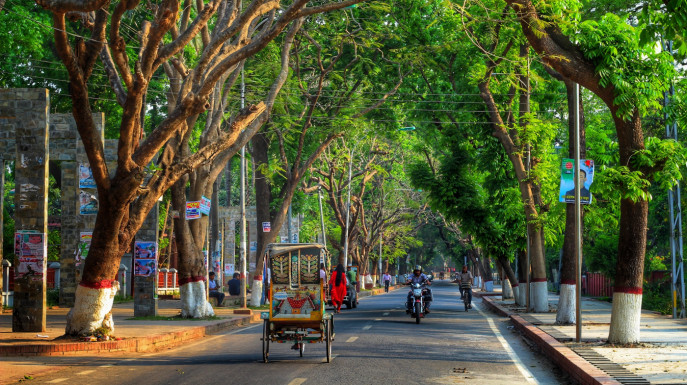

Rajshahi
Whole Rajshahi city only for $600
Modern Rajshahi lies in the ancient region of Pundravardhana. The foundation of the city dates to 1634, according to epigraphic records at the mausoleum of Sufi saint Shah Makhdum. The area hosted a Dutch settlement in the 18th century.[6] The Rajshahi municipality was constituted during the British Raj in 1876. It was a divisional capital of the Bengal Presidency. Rajshahi is an important administrative, educational, cultural and business centre in Bangladesh today. It is a historic center of silk production.
- Puthia temple complex
- Kantaje Temple
- Tajhat palace
- Buddist Bihar

The Puthia Temple Complex consists of a cluster of notable old Hindu temples in Puthia Upazila, Rajshahi District, Bangladesh. Located 23 km to the east of Rajshahi city, it has the largest number of historic temples in Bangladesh.[1] The temples were built by Hindu Zamindars Rajas of the Puthia Raj family who were noted philanthropists of Rajshahi. The temples have been built in terracotta in a variety of styles combining the typical Jor-bangla architecture with other influences. The Rajbari or Palace of the Raja of Puthia and the Dol Mancha are part of the complex.[2] The temples are laid out around a lake with a sprawling lawn.
Kantanagar Temple, commonly known as Kantaji Temple or Kantajew Temple. The temple belongs to the popular Hindu Kanta or Krishna and this is most popular with the Radha-Krishna cult (assemble of memorable love) in Bengal. This beautiful temple is dedicated to Krishna and his wife Rukmini Built by Maharaja Pran Nath, its construction started in 1704 CE and ended in the reign of his son Raja Ramnath in 1722 CE.
The palace was built by Maharaja Kumar Gopal Lal Roy in the beginning of the 20th century. It is believed that from the conspicuous appearance of his Taj or jeweled crown, his estate derived the name of Tajhat.
The purpose of this central structure at the midst of the courtyard remains unsolved since its discovery. Hence, most of the debates generated hitherto on the architecture of Sompur Mahavihara are cantered on the identification its missing superstructure. The reason may be manifold, but the most important one is the non-availability of substantial amount of first-hand resource including a comprehensive architectural documentation at the disposal of the researchers. There are different arguments regarding the terminating top of the central structure of Sompur Mahavihara
Book Now
Package will cover hotel cost,meals and selected destinantion travel expense. This package is for 3 nights and 4 days.